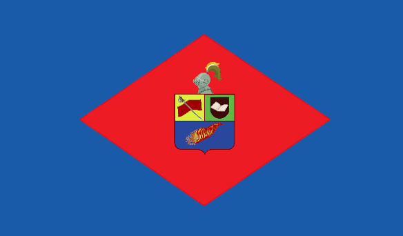
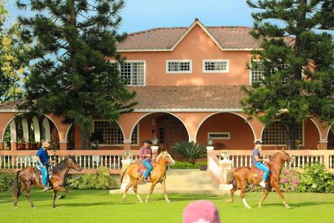
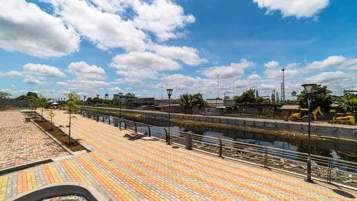
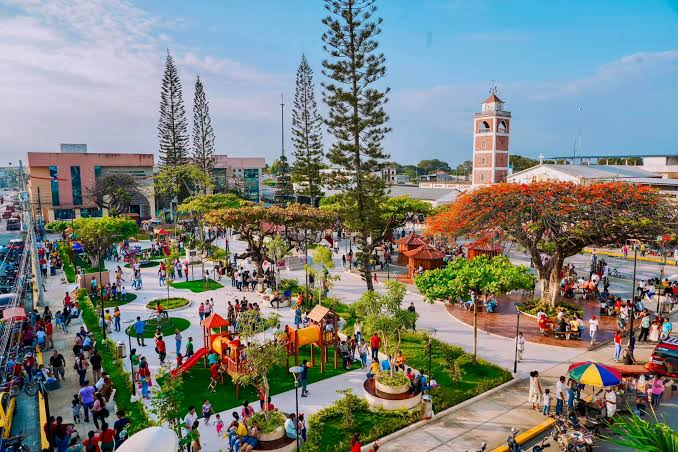
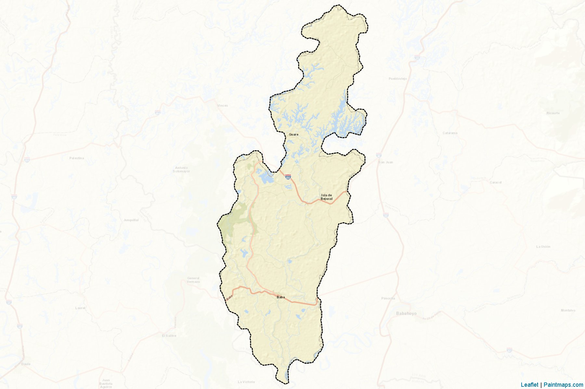

El cantón Baba es uno de los más antiguos de la provincia de Los Ríos, Ecuador. Es conocido como "La Noble y Torera Baba" por su historia y sus tradiciones. Su cantonización fue establecida el 23 de junio de 1824. Se caracteriza por su riqueza agrícola, destacándose los cultivos de arroz, banano y cacao, que son importantes para la economía de sus habitantes.

El cantón Baba está conformado por tres parroquias:
El cantón Baba cuenta con una variedad de platos típicos que reflejan la riqueza culinaria de la región. Algunos de los más representativos son:
bollo de pescadoLas parroquias Baba, Guare e Isla de Bejucal comparten las tradiciones gastronómicas del cantón. Entre sus comidas se encuentran el arroz con menestra y carne asada, la fritada, el chicharrón y los platos preparados con gallina criolla.
Es visitado porque cuenta con piscinas para adultos y niños, toboganes, canchas deportivas y espacios para disfrutar en familia.

Es un lugar ideal para disfrutar de la naturaleza y la vida del campo. Allí se pueden realizar paseos a caballo, conocer animales y aprender sobre el cultivo del café.

Es un espacio para caminar, disfrutar del paisaje junto al río y compartir momentos de recreación con familiares y amigos.

Es visitado por sus áreas verdes, juegos infantiles y espacios de descanso, donde las familias pueden reunirse y disfrutar al aire libre.

La actual alcaldesa del cantón Baba es la abogada Shirley Jael Melo Olvera, conocida como Jael Melo. Ejerce sus funciones durante el período 2023-2027 y está a cargo de la administración municipal y de impulsar proyectos para el desarrollo del cantón.
Según el Censo de Población y Vivienda de 2022 del INEC, el cantón Baba cuenta con 45.296 habitantes, distribuidos en sus tres parroquias: Baba, Guare e Isla de Bejucal.

Volver al índice principal